11 Shared options
These groups hold options that several charts or builders take. A chart’s or builder’s section lists the groups it takes with their keys and links here. Use this chapter to see what each option does and how it looks; each card’s example draws one chart that takes the group. Each data function’s section documents the options it owns, and the last section here links them.
(ns reference.shared-options
(:require [fastmath.core :as m]
[fastmath.kernel :as k]
[fastmath.random :as r]
[cljplot2.chart :as chart]
[cljplot2.core :as plot]
[cljplot2.data.levels :as levels]
[cljplot2.data.tree :as tree]
[cljplot2.describe :as describe]
[cljplot2.schema :as schema]
[notebook-utils :as nu]))The table below holds a made-up wave in two halves; the common, annotation, line style, text style and multiplot sections use it:
(def wave (for [t (range 30)] {:t t :v (m/sin (m/* 0.3 t)) :g (if (< t 15) "early" "late")}))| t | v | g |
|---|---|---|
| 0 | 0.0 | early |
| 1 | 0.29552020666133955 | early |
| 2 | 0.5646424733950354 | early |
| 3 | 0.7833269096274833 | early |
| 4 | 0.9320390859672263 | early |
| 5 | 0.9974949866040544 | early |
| 6 | 0.9738476308781953 | early |
| 7 | 0.8632093666488737 | early |
| 8 | 0.675463180551151 | early |
| 9 | 0.42737988023383017 | early |
| 10 | 0.1411200080598672 | early |
| 11 | -0.1577456941432482 | early |
| 12 | -0.4425204432948521 | early |
| 13 | -0.6877661591839738 | early |
| 14 | -0.8715757724135882 | early |
| 15 | -0.977530117665097 | late |
| 16 | -0.9961646088358407 | late |
| 17 | -0.9258146823277325 | late |
| 18 | -0.7727644875559877 | late |
| 19 | -0.5506855425976376 | late |
| 20 | -0.27941549819892586 | late |
| 21 | 0.016813900484349713 | late |
| 22 | 0.31154136351337786 | late |
| 23 | 0.5784397643881994 | late |
| 24 | 0.7936678638491527 | late |
| 25 | 0.9379999767747389 | late |
| 26 | 0.998543345374605 | late |
| 27 | 0.9698898108450863 | late |
| 28 | 0.8545989080882804 | late |
| 29 | 0.6629692300821833 | late |
The table below holds made-up counts of three levels in two groups; the bar sections use it:
(def counts [{:k "a" :g "x" :v 3} {:k "a" :g "y" :v 2} {:k "b" :g "x" :v 5}
{:k "b" :g "y" :v 4} {:k "c" :g "x" :v 4} {:k "c" :g "y" :v 1}])| k | g | v |
|---|---|---|
| a | x | 3 |
| a | y | 2 |
| b | x | 5 |
| b | y | 4 |
| c | x | 4 |
| c | y | 1 |
The table below holds eight made-up points; the curve and theme style sections use them:
(def points (for [x (range 8)] {:x x :y (nth [1 3 2 5 4 4.5 2 3] x)}))| x | y |
|---|---|
| 0 | 1 |
| 1 | 3 |
| 2 | 2 |
| 3 | 5 |
| 4 | 4 |
| 5 | 4.5 |
| 6 | 2 |
| 7 | 3 |
The table below holds a made-up budget of departments and teams; the hierarchy label section uses it:
(def budget [{:dept "science" :team "physics" :cost 40} {:dept "science" :team "biology" :cost 25}
{:dept "arts" :team "music" :cost 15} {:dept "arts" :team "theatre" :cost 10}
{:dept "sport" :team "football" :cost 20}])| dept | team | cost |
|---|---|---|
| science | physics | 40 |
| science | biology | 25 |
| arts | music | 15 |
| arts | theatre | 10 |
| sport | football | 20 |
The table below holds made-up energy flows; the builder section uses it:
(def flows [{:from "coal" :to "power" :value 30} {:from "gas" :to "power" :value 20} {:from "gas" :to "homes" :value 15}
{:from "power" :to "homes" :value 25} {:from "power" :to "industry" :value 25}])| from | to | value |
|---|---|---|
| coal | power | 30 |
| gas | power | 20 |
| gas | homes | 15 |
| power | homes | 25 |
| power | industry | 25 |
The tables below hold the iris flowers and the Old Faithful eruptions; the strip, mirror, ridgeline, cell, field and 3D sections use them:
Data: Edgar Anderson’s iris measurements, R datasets package iris (Anderson 1935; Fisher 1936); licence: Part of R (GPL-2 | GPL-3).
(def iris (nu/dataset :iris))| sepal-length | sepal-width | petal-length | petal-width | species |
|---|---|---|---|---|
| 5.1 | 3.5 | 1.4 | 0.2 | setosa |
| 4.9 | 3 | 1.4 | 0.2 | setosa |
| 4.7 | 3.2 | 1.3 | 0.2 | setosa |
| 4.6 | 3.1 | 1.5 | 0.2 | setosa |
| 5 | 3.6 | 1.4 | 0.2 | setosa |
| 5.4 | 3.9 | 1.7 | 0.4 | setosa |
| 4.6 | 3.4 | 1.4 | 0.3 | setosa |
| 5 | 3.4 | 1.5 | 0.2 | setosa |
| 4.4 | 2.9 | 1.4 | 0.2 | setosa |
| 4.9 | 3.1 | 1.5 | 0.1 | setosa |
| 5.4 | 3.7 | 1.5 | 0.2 | setosa |
| 4.8 | 3.4 | 1.6 | 0.2 | setosa |
| 4.8 | 3 | 1.4 | 0.1 | setosa |
| 4.3 | 3 | 1.1 | 0.1 | setosa |
| 5.8 | 4 | 1.2 | 0.2 | setosa |
| 5.7 | 4.4 | 1.5 | 0.4 | setosa |
| 5.4 | 3.9 | 1.3 | 0.4 | setosa |
| 5.1 | 3.5 | 1.4 | 0.3 | setosa |
| 5.7 | 3.8 | 1.7 | 0.3 | setosa |
| 5.1 | 3.8 | 1.5 | 0.3 | setosa |
| 5.4 | 3.4 | 1.7 | 0.2 | setosa |
| 5.1 | 3.7 | 1.5 | 0.4 | setosa |
| 4.6 | 3.6 | 1 | 0.2 | setosa |
| 5.1 | 3.3 | 1.7 | 0.5 | setosa |
| 4.8 | 3.4 | 1.9 | 0.2 | setosa |
| 5 | 3 | 1.6 | 0.2 | setosa |
| 5 | 3.4 | 1.6 | 0.4 | setosa |
| 5.2 | 3.5 | 1.5 | 0.2 | setosa |
| 5.2 | 3.4 | 1.4 | 0.2 | setosa |
| 4.7 | 3.2 | 1.6 | 0.2 | setosa |
| 4.8 | 3.1 | 1.6 | 0.2 | setosa |
| 5.4 | 3.4 | 1.5 | 0.4 | setosa |
| 5.2 | 4.1 | 1.5 | 0.1 | setosa |
| 5.5 | 4.2 | 1.4 | 0.2 | setosa |
| 4.9 | 3.1 | 1.5 | 0.2 | setosa |
| 5 | 3.2 | 1.2 | 0.2 | setosa |
| 5.5 | 3.5 | 1.3 | 0.2 | setosa |
| 4.9 | 3.6 | 1.4 | 0.1 | setosa |
| 4.4 | 3 | 1.3 | 0.2 | setosa |
| 5.1 | 3.4 | 1.5 | 0.2 | setosa |
| 5 | 3.5 | 1.3 | 0.3 | setosa |
| 4.5 | 2.3 | 1.3 | 0.3 | setosa |
| 4.4 | 3.2 | 1.3 | 0.2 | setosa |
| 5 | 3.5 | 1.6 | 0.6 | setosa |
| 5.1 | 3.8 | 1.9 | 0.4 | setosa |
| 4.8 | 3 | 1.4 | 0.3 | setosa |
| 5.1 | 3.8 | 1.6 | 0.2 | setosa |
| 4.6 | 3.2 | 1.4 | 0.2 | setosa |
| 5.3 | 3.7 | 1.5 | 0.2 | setosa |
| 5 | 3.3 | 1.4 | 0.2 | setosa |
| 7 | 3.2 | 4.7 | 1.4 | versicolor |
| 6.4 | 3.2 | 4.5 | 1.5 | versicolor |
| 6.9 | 3.1 | 4.9 | 1.5 | versicolor |
| 5.5 | 2.3 | 4 | 1.3 | versicolor |
| 6.5 | 2.8 | 4.6 | 1.5 | versicolor |
| 5.7 | 2.8 | 4.5 | 1.3 | versicolor |
| 6.3 | 3.3 | 4.7 | 1.6 | versicolor |
| 4.9 | 2.4 | 3.3 | 1 | versicolor |
| 6.6 | 2.9 | 4.6 | 1.3 | versicolor |
| 5.2 | 2.7 | 3.9 | 1.4 | versicolor |
| 5 | 2 | 3.5 | 1 | versicolor |
| 5.9 | 3 | 4.2 | 1.5 | versicolor |
| 6 | 2.2 | 4 | 1 | versicolor |
| 6.1 | 2.9 | 4.7 | 1.4 | versicolor |
| 5.6 | 2.9 | 3.6 | 1.3 | versicolor |
| 6.7 | 3.1 | 4.4 | 1.4 | versicolor |
| 5.6 | 3 | 4.5 | 1.5 | versicolor |
| 5.8 | 2.7 | 4.1 | 1 | versicolor |
| 6.2 | 2.2 | 4.5 | 1.5 | versicolor |
| 5.6 | 2.5 | 3.9 | 1.1 | versicolor |
| 5.9 | 3.2 | 4.8 | 1.8 | versicolor |
| 6.1 | 2.8 | 4 | 1.3 | versicolor |
| 6.3 | 2.5 | 4.9 | 1.5 | versicolor |
| 6.1 | 2.8 | 4.7 | 1.2 | versicolor |
| 6.4 | 2.9 | 4.3 | 1.3 | versicolor |
| 6.6 | 3 | 4.4 | 1.4 | versicolor |
| 6.8 | 2.8 | 4.8 | 1.4 | versicolor |
| 6.7 | 3 | 5 | 1.7 | versicolor |
| 6 | 2.9 | 4.5 | 1.5 | versicolor |
| 5.7 | 2.6 | 3.5 | 1 | versicolor |
| 5.5 | 2.4 | 3.8 | 1.1 | versicolor |
| 5.5 | 2.4 | 3.7 | 1 | versicolor |
| 5.8 | 2.7 | 3.9 | 1.2 | versicolor |
| 6 | 2.7 | 5.1 | 1.6 | versicolor |
| 5.4 | 3 | 4.5 | 1.5 | versicolor |
| 6 | 3.4 | 4.5 | 1.6 | versicolor |
| 6.7 | 3.1 | 4.7 | 1.5 | versicolor |
| 6.3 | 2.3 | 4.4 | 1.3 | versicolor |
| 5.6 | 3 | 4.1 | 1.3 | versicolor |
| 5.5 | 2.5 | 4 | 1.3 | versicolor |
| 5.5 | 2.6 | 4.4 | 1.2 | versicolor |
| 6.1 | 3 | 4.6 | 1.4 | versicolor |
| 5.8 | 2.6 | 4 | 1.2 | versicolor |
| 5 | 2.3 | 3.3 | 1 | versicolor |
| 5.6 | 2.7 | 4.2 | 1.3 | versicolor |
| 5.7 | 3 | 4.2 | 1.2 | versicolor |
| 5.7 | 2.9 | 4.2 | 1.3 | versicolor |
| 6.2 | 2.9 | 4.3 | 1.3 | versicolor |
| 5.1 | 2.5 | 3 | 1.1 | versicolor |
| 5.7 | 2.8 | 4.1 | 1.3 | versicolor |
| … | … | … | … | … |
Data: Old Faithful geyser eruptions, R datasets package faithful (Härdle 1991; Azzalini & Bowman 1990); licence: Part of R (GPL-2 | GPL-3).
(def faithful (nu/dataset :faithful))| eruptions | waiting |
|---|---|
| 3.6 | 79 |
| 1.8 | 54 |
| 3.333 | 74 |
| 2.283 | 62 |
| 4.533 | 85 |
| 2.883 | 55 |
| 4.7 | 88 |
| 3.6 | 85 |
| 1.95 | 51 |
| 4.35 | 85 |
| 1.833 | 54 |
| 3.917 | 84 |
| 4.2 | 78 |
| 1.75 | 47 |
| 4.7 | 83 |
| 2.167 | 52 |
| 1.75 | 62 |
| 4.8 | 84 |
| 1.6 | 52 |
| 4.25 | 79 |
| 1.8 | 51 |
| 1.75 | 47 |
| 3.45 | 78 |
| 3.067 | 69 |
| 4.533 | 74 |
| 3.6 | 83 |
| 1.967 | 55 |
| 4.083 | 76 |
| 3.85 | 78 |
| 4.433 | 79 |
| 4.3 | 73 |
| 4.467 | 77 |
| 3.367 | 66 |
| 4.033 | 80 |
| 3.833 | 74 |
| 2.017 | 52 |
| 1.867 | 48 |
| 4.833 | 80 |
| 1.833 | 59 |
| 4.783 | 90 |
| 4.35 | 80 |
| 1.883 | 58 |
| 4.567 | 84 |
| 1.75 | 58 |
| 4.533 | 73 |
| 3.317 | 83 |
| 3.833 | 64 |
| 2.1 | 53 |
| 4.633 | 82 |
| 2 | 59 |
| 4.8 | 75 |
| 4.716 | 90 |
| 1.833 | 54 |
| 4.833 | 80 |
| 1.733 | 54 |
| 4.883 | 83 |
| 3.717 | 71 |
| 1.667 | 64 |
| 4.567 | 77 |
| 4.317 | 81 |
| 2.233 | 59 |
| 4.5 | 84 |
| 1.75 | 48 |
| 4.8 | 82 |
| 1.817 | 60 |
| 4.4 | 92 |
| 4.167 | 78 |
| 4.7 | 78 |
| 2.067 | 65 |
| 4.7 | 73 |
| 4.033 | 82 |
| 1.967 | 56 |
| 4.5 | 79 |
| 4 | 71 |
| 1.983 | 62 |
| 5.067 | 76 |
| 2.017 | 60 |
| 4.567 | 78 |
| 3.883 | 76 |
| 3.6 | 83 |
| 4.133 | 75 |
| 4.333 | 82 |
| 4.1 | 70 |
| 2.633 | 65 |
| 4.067 | 73 |
| 4.933 | 88 |
| 3.95 | 76 |
| 4.517 | 80 |
| 2.167 | 48 |
| 4 | 86 |
| 2.2 | 60 |
| 4.333 | 90 |
| 1.867 | 50 |
| 4.817 | 78 |
| 1.833 | 63 |
| 4.3 | 72 |
| 4.667 | 84 |
| 3.75 | 75 |
| 1.867 | 51 |
| 4.9 | 82 |
| … | … |
11.1 Charts
11.1.1 Common options
These options give a chart its own rows and mapping and switch its legend glyph off; every chart takes them, but the function chart takes only :legend and the image chart none. The plot below draws a line from its own rows beside the plot’s points:
(plot/render-image {:data wave
:mapping {:x :t :y :v}
:charts [(chart/scatter)
(chart/line {:data (for [t (range 0 30 0.5)] {:t t :v (m/sin (m/* 0.3 t))})})]}
{:width 500 :height 250})
In the right plot below :legend false keeps the rug’s glyph out of the legend. On the left the rug’s ticks cover the scatter’s dots in every key:
(plot/render-image (plot/arrange (for [legend [true false]]
{:data wave
:mapping {:x :t :y :v :color #(if (m/pos? (double (:v %))) "up" "down")}
:charts [(chart/scatter) (chart/rug {:mapping {:y nil} :legend legend})]
:labels {:title (str "rug :legend " legend)}})
{:columns 2})
{:width 800 :height 250})
11.1.2 Annotation options
This option decides whether the literal positions of an annotation chart widen the scales; the rule, rect and text charts take it. In the right panel below the rule at y = 2 lies off the panel:
(plot/render-image (plot/arrange (for [extent [true false]]
{:data wave
:mapping {:x :t :y :v}
:charts [(chart/line) (chart/rule {:y 2 :extent extent :dash :dashed})]
:labels {:title (str ":extent " extent)}})
{:columns 2})
{:width 800 :height 250})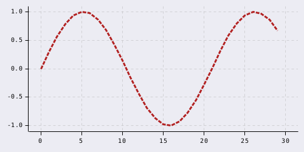
11.1.3 Line style
These options set the colour, width and dash of a line; the line, rule, segment, smooth, density, ecdf, function, contour and parallel charts take them. The plot below draws a thick red dashed line:
(plot/render-image {:data wave
:mapping {:x :t :y :v}
:charts [(chart/line {:color [178 34 34] :line-width 3 :dash [6 2]})]}
{:width 500 :height 250})
The plot below draws every built-in dash style; a dash may also be a vector of dash and gap lengths, as above:
(plot/render-image {:charts (vec (mapcat (fn [i d]
[(chart/rule {:y i :dash d :line-width 2})
(chart/text {:x 0 :y i :text (str d) :anchor [:left :bottom]})])
(range 1 100) (:dash describe/attribute-values)))
:scales {:x {:domain [0 1] :axis false} :y {:domain [0 9] :reverse true :axis false}}}
{:width 500 :height 320})
11.1.4 Curves
These options shape the line between data points, straight or interpolated, and set how densely the chart samples it; the line chart takes them, the ribbon all but :curve. The panels below draw four interpolators through the points:
(plot/render-image (plot/arrange (for [interpolator [:linear :monotone :cubic :step]]
{:data points
:mapping {:x :x :y :y}
:charts [(chart/line {:interpolator interpolator}) (chart/scatter)]
:labels {:title (str ":interpolator " interpolator)}})
{:columns 4})
{:width 1000 :height 260})
The panels below draw every interpolation method (schema/interpolation-methods) through the same points with default parameters. Most pass through the points or smooth them. :pava and :cir fit a monotone curve: :pava joins flat runs by steps, :cir slopes between them. :kriging stays near a constant; a seeded search fits its variogram to the points, so every render draws the same curve. :gp and :rbf use a kernel too narrow for points this far apart:
(plot/render-image (plot/arrange (for [interpolator (sort schema/interpolation-methods)]
{:data points
:mapping {:x :x :y :y}
:charts [(chart/line {:interpolator interpolator}) (chart/scatter {:size 4})]
:labels {:title (str interpolator)}})
{:columns 4})
{:width 1000 :height 800})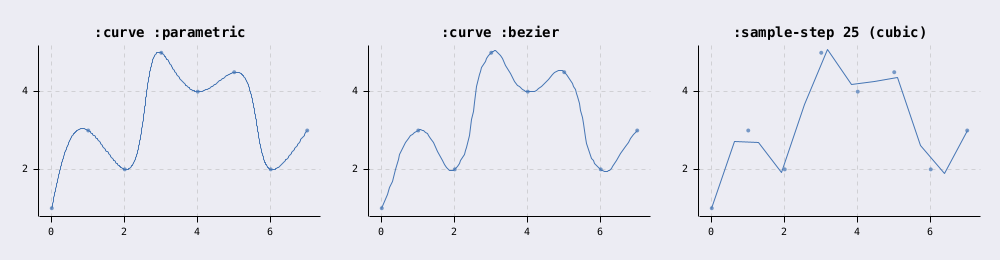
:gp and :rbf take a fastmath kernel in :interpolator-params. The chart fits a curve in pixels along the line’s horizontal axis, so the kernel’s width is in pixels. The panels below take 60, a bit more than the gap between the points:
(plot/render-image (plot/arrange [{:data points
:mapping {:x :x :y :y}
:charts [(chart/line {:interpolator :gp :interpolator-params [(k/kernel :gaussian {:sigma 60.0})]})
(chart/scatter {:size 4})]
:labels {:title ":gp, gaussian kernel sigma 60"}}
{:data points
:mapping {:x :x :y :y}
:charts [(chart/line {:interpolator :rbf :interpolator-params [(k/rbf :gaussian {:scale 60.0})]})
(chart/scatter {:size 4})]
:labels {:title ":rbf, gaussian scale 60"}}]
{:columns 2})
{:width 800 :height 280})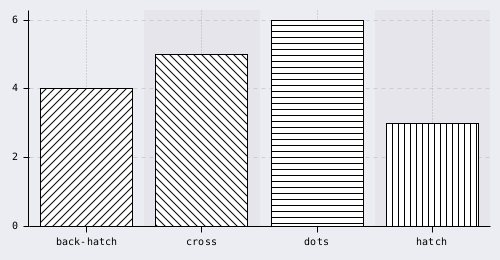
The panels below draw both :curve kinds, then a coarse :sample-step that shows the samples:
(plot/render-image (plot/arrange (for [[title opts] [[":curve :parametric" {:curve :parametric}]
[":curve :bezier" {:curve :bezier}]
[":sample-step 25 (cubic)" {:interpolator :cubic :sample-step 25}]]]
{:data points
:mapping {:x :x :y :y}
:charts [(chart/line opts) (chart/scatter {:size 4})]
:labels {:title title}})
{:columns 3})
{:width 1000 :height 260})
11.1.5 Fill patterns
These options draw a pattern over a filled mark; bars, areas, boxes and the hierarchy charts take them. The plot below draws a bar per pattern:
(plot/render-image {:data (for [[i p] (map-indexed vector [:hatch :back-hatch :cross :dots])] {:p (name p) :v (+ 3 i)})
:mapping {:x :p :y :v :pattern :p}
:charts [(chart/bar {:color :white :stroke-color :black :pattern-color :black})]
:legend false}
{:width 500 :height 260})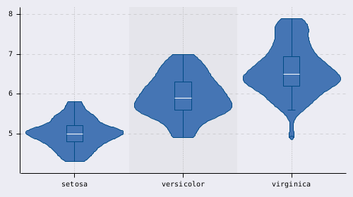
11.1.6 Rounded corners
These options round the corners of bars and rectangles: all of them, or only those at a bar’s value end; the bar, histogram and rect charts take them. The plot below rounds the value ends:
(plot/render-image {:data counts
:mapping {:x :k :y :v :color :g}
:charts [(chart/bar {:corner-radius-end 8})]}
{:width 500 :height 260})
11.1.7 Strip options
These options place the items of strip charts, which draw one item per level of a categorical axis: bar, box, violin, stripplot, beeswarm, dotplot, rug, bullet and extent.
11.1.7.1 Placement
These options set where the items sit across the value axis, how wide they are and which axis holds the levels. The plot below draws narrow boxes over wide violins:
(plot/render-image {:data iris
:mapping {:x :species :y :sepal-length}
:charts [(chart/violin {:width 0.9}) (chart/box {:width 0.15})]}
{:width 500 :height 280})
Without levels an item sits where :place puts it. The panels below draw a box of the eruption times over the scatter in each place:
(plot/render-image (plot/arrange (for [[place opts] [[:center {:width 0.15}] [:bottom {:width 0.8}]
[:edge {:thickness 12}] [{:at 60} {:thickness 20}]]]
{:data faithful
:mapping {:x :eruptions :y :waiting}
:charts [(chart/scatter {:size 4}) (chart/box (merge {:place place :mapping {:y nil}} opts))]
:labels {:title (str ":place " place " " opts)}})
{:columns 2})
{:width 900 :height 600})
In the plot below the rounded petal widths on y are declared categorical, so they hold the levels, with a strip of sepal lengths at each; :level-axis :y only states the default. The stripplot’s seeded :jitter spreads the points across the band:
(plot/render-image {:data iris
:mapping {:x :sepal-length :y (levels/categorical #(m/round (:petal-width %)))}
:charts [(chart/stripplot {:level-axis :y :jitter 0.3 :rng (r/rng :mersenne 5)})]
:labels {:x "sepal length" :y "petal width, rounded"}}
{:width 500 :height 280})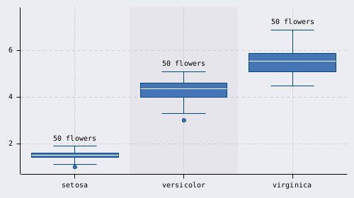
11.1.7.2 Groups
These options set how the groups of one level share its band. The plot below dodges the boxes of narrow and wide petals with a wide gap:
(plot/render-image {:data iris
:mapping {:x :species :y :sepal-length :color #(if (< (:petal-width %) 1.3) "narrow" "wide")}
:charts [(chart/box {:position :dodge :dodge-gap 0.3})]}
{:width 500 :height 260})
11.1.7.3 Counts
These options write each item’s row count past its largest value. The plot below counts the flowers per species:
(plot/render-image {:data iris
:mapping {:x :species :y :petal-length}
:charts [(chart/box {:n-label true :n-format "%d flowers"})]}
{:width 500 :height 280})
11.1.8 Mirrored strips
This option draws two groups on the two sides of the value axis, as in a population pyramid; the bar and extent charts take it. The plot below mirrors flipped bars:
(plot/render-image {:data counts
:mapping {:x :k :y :v :color :g}
:charts [(chart/bar {:mirror :color})]
:flip true
:scales {:x {:reverse true}}}
{:width 500 :height 260})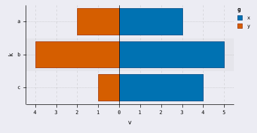
The panels below mirror upright bars and the intervals of a range chart; the second group’s items lie below the axis:
(plot/render-image (plot/arrange [{:data counts
:mapping {:x :k :y :v :color :g}
:charts [(chart/bar {:mirror :color})]
:labels {:title "bar, :mirror :color"}}
{:data iris
:mapping {:x :species :y :sepal-length :color #(if (< (:petal-width %) 1.3) "narrow" "wide")}
:charts [(chart/extent {:mirror :color})]
:labels {:title "extent, :mirror :color"}}]
{:columns 2})
{:width 900 :height 300})
11.1.9 Ridgelines
This option sets how far ridgelines overlap, the rows of histograms or densities drawn per level of a categorical axis; the histogram and density charts take it. The plot below overlaps the species’ densities:
(plot/render-image {:data iris
:mapping {:x :sepal-length :y :species :color :species}
:charts [(chart/density {:overlap 1.8 :fill :color :alpha 0.7})]
:scales {:y {:reverse true}}
:legend false}
{:width 500 :height 300})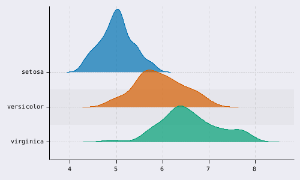
11.1.10 Cell style
These options set the shape, size and outline of the cells of grid-cell charts; the tile and bin2d charts take them. The panels below bin the same points in every cell type:
(plot/render-image (plot/arrange (for [cell (:cell describe/attribute-values)]
{:data iris
:mapping {:x :sepal-length :y :sepal-width}
:charts [(chart/bin2d {:cell cell :stroke-color :white})]
:labels {:title (str ":cell " cell)}
:legend false})
{:columns 3})
{:width 900 :height 560})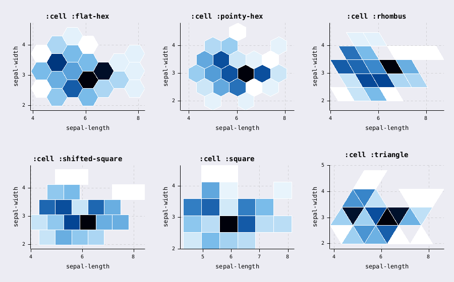
11.1.11 Fields
These options give the scalar field that the field and contour charts draw: a function, a kernel density estimate of mapped points, or gridded data.
11.1.11.1 A function
These options give the field as a function of a point over a domain. The plot below draws contours of a function:
(plot/render-image {:charts [(chart/contour {:f (fn [[x y]] (+ (* x x) (* 2 y y))) :domain {:x [-2 2] :y [-2 2]}})]}
{:width 450 :height 350})
11.1.11.2 A density estimate
These options set the kernel density estimate of mapped points. The plot below draws the estimate of the iris sepals:
(plot/render-image {:data iris
:mapping {:x :sepal-length :y :sepal-width}
:charts [(chart/field {:kernel :epanechnikov :bandwidth 0.4}) (chart/scatter {:size 3})]}
{:width 450 :height 350})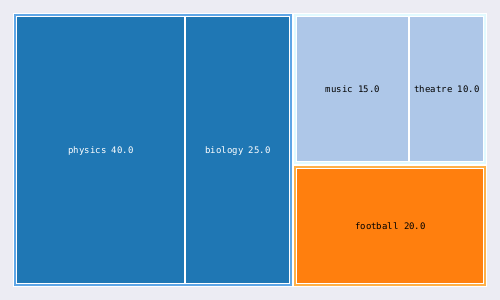
11.1.11.3 The grid
These options set the grid the chart samples and how it interpolates gridded data. The plot below samples a function on a coarse grid:
(plot/render-image {:charts [(chart/field {:f (fn [[x y]] (m/sin (m/* x y))) :domain {:x [0 3] :y [0 3]} :n 12})]}
{:width 450 :height 350})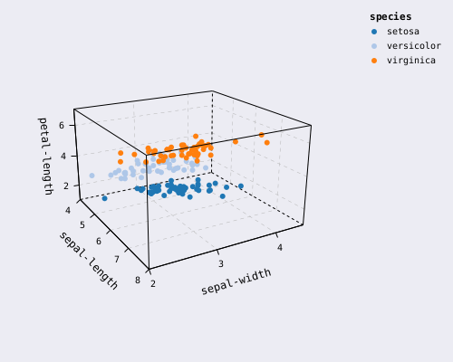
11.1.12 Hierarchy labels
These options switch the group and leaf labels on or off, or write them with a function; the treemap, partition and pack charts take them. The plot below drops the group labels and writes each leaf’s value:
(plot/render-image {:data budget
:mapping {:hierarchy [:dept :team] :value :cost}
:charts [(chart/treemap {:group-labels false :leaf-labels #(str (:name %) " " (:value %))})]}
{:width 500 :height 300})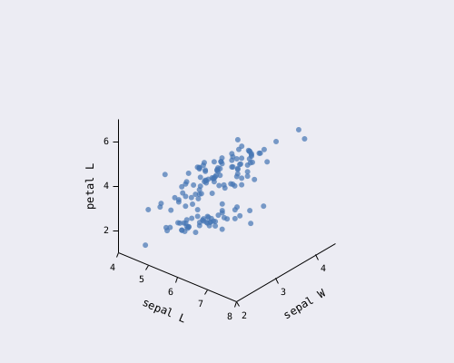
11.1.13 3D frame
These options set the box in which the 3D charts, cloud and surface, draw their data.
11.1.13.1 View
These options place the eye and shape the box. The plot below turns the cloud and flattens its box:
(plot/render-image {:data iris
:mapping {:x :sepal-length :y :sepal-width :z :petal-length :color :species}
:charts [(chart/cloud {:view {:azimuth 60 :elevation 20 :distance 0.3} :aspect [1 1 0.6]})]}
{:width 500 :height 400})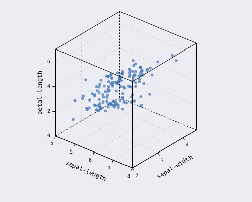
11.1.13.2 Axes
These options switch the box, the ticks and the axis titles on or off; the plot’s :labels give the titles’ text. The plot below drops the box and names the axes:
(plot/render-image {:data iris
:mapping {:x :sepal-length :y :sepal-width :z :petal-length}
:charts [(chart/cloud {:box false})]
:labels {:x "sepal L" :y "sepal W" :z "petal L"}}
{:width 500 :height 400})
11.1.13.3 Domains
This option fixes the domains. The plot below fixes all three:
(plot/render-image {:data iris
:mapping {:x :sepal-length :y :sepal-width :z :petal-length}
:charts [(chart/cloud {:domain {:x [4 8] :y [2 4.5] :z [0 7]}})]}
{:width 500 :height 400})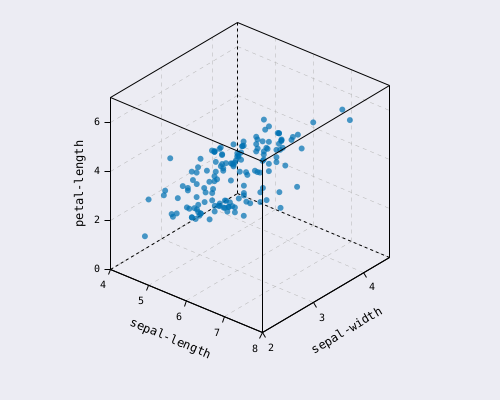
11.1.14 3D shading
These options light the shaded faces of 3D charts by Lambert’s law: an ambient share of the colour plus the rest by the face’s angle to the light. The surface chart takes them for its quads and the cloud chart for its bars. The panels below draw the default shading beside a smaller ambient share lit from the upper right, on the surface \(z = \sin(xy)\):
(plot/render-image (plot/arrange [{:charts [(chart/surface {:f (fn [[x y]] (m/sin (m/* x y)))
:domain {:x [-2 2] :y [-2 2]} :color [120 160 220]})]
:labels {:title "default shading"}}
{:charts [(chart/surface {:f (fn [[x y]] (m/sin (m/* x y)))
:domain {:x [-2 2] :y [-2 2]} :color [120 160 220]
:ambient 0.2 :light [1.0 1.0 -0.5]})]
:labels {:title ":ambient 0.2 :light [1 1 -0.5]"}}]
{:columns 2 :title "$z = \\sin(xy)$"})
{:width 800 :height 400})
11.1.15 Text style
These options set the font, size, colour, inset, background, alignment and formula switch of a text, over its text role (Theme chapter); label maps take them all, the text chart all but :align. The plot below writes a styled note:
(plot/render-image {:data wave
:mapping {:x :t :y :v}
:charts [(chart/line)
(chart/text {:x 15 :y 0 :text "a styled note" :size 14 :font-style :bold
:color :white :background [70 90 140] :inset 6})]}
{:width 500 :height 250})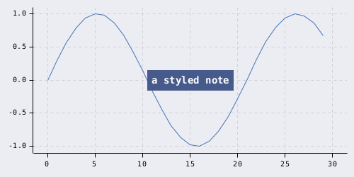
11.1.16 Named theme styles
This option names a theme style [:chart name], a partial style a theme defines once, merged over the chart’s own [:chart kind]; every chart with a theme style takes it. Builders draw with styles of their own. build checks the merged style against the chart’s style keys and rejects a name the theme doesn’t have. The plot below draws the highlighted points in a style named :highlight:
(plot/render-image {:data points
:mapping {:x :x :y :y}
:charts [(chart/scatter)
(chart/scatter {:data (filter #(> (:y %) 4) points) :theme-style :highlight})]
:theme {:chart {:highlight {:size 14 :color [215 48 39] :shape \s}}}}
{:width 500 :height 300})
11.2 Builders
11.2.1 Builder options
These options give the plot a builder returns its title, scales and theme; every builder takes the ones it uses (plot/arrange no :scales, plot/pairs only :title). The plot below titles a sankey diagram and sets its background:
(plot/render-image (plot/sankey flows {:title "Energy flows" :theme {:plot {:background :white}}})
{:width 500 :height 300})
11.2.2 Multiplot layout
These options lay out the grid of plot/arrange and of a plot’s :arrange: its shape, its weights and the panels’ alignment. The plot below gives a line three times the width of a box:
(plot/render-image (plot/arrange [{:data wave :mapping {:x :t :y :v} :charts [(chart/line)]}
{:data wave :mapping {:x :g :y :v} :charts [(chart/box)]}]
{:columns 2 :widths [3 1]})
{:width 700 :height 250})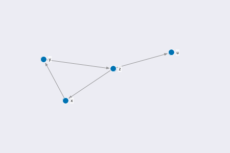
11.3 Builders and data functions
The groups below are the options of data functions, which builders forward; each function’s section documents them:
- Alluvial graph –
graph/alluvial-graph::variables:value:strand-color - Arc layout –
graph/arc-layout::order - Autocorrelation rows –
series/acf-rows::lags:level:partial - Chord layout –
graph/chord-layout::order:gap-angle:inner-radius:min-value - Dendrogram layout –
tree/layout::k:circular:span - Edge bundling –
tree/bundle-paths::from:to:beta - Graph –
graph/graph::from:to:value:nodes:id:directed - Graph layout –
graph/layout::layout:iterations:gravity:rng - Horizon rows –
series/horizon-rows::x:y:series:bands:band-height:interpolator:steps-per-gap - Node-link tree layout –
tree/node-link-layout::layout:links:circular:span - Sankey layout –
graph/sankey-layout::align:layer:node-width:gap:iterations:order - Sequences –
hierarchy/sequence-levels::sequence:value:separator:end:keep-end
source: notebooks/reference/shared_options.clj